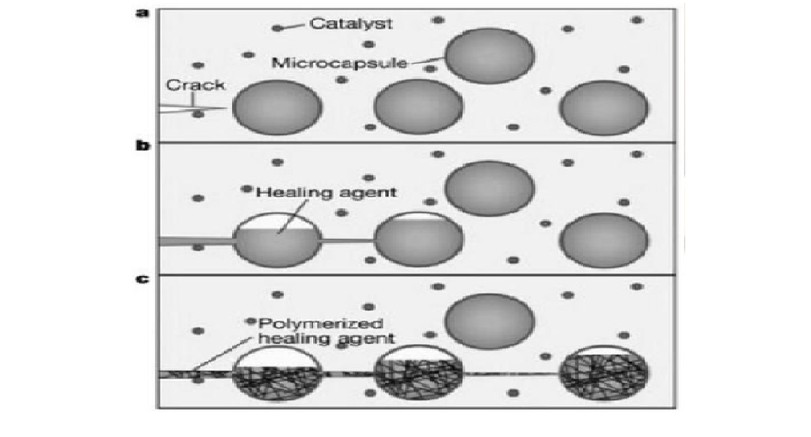

Currently, the construction industry is always trying to improve the efficiency, sustainability and adaptability of the construction process
and with the advanced technologies we have today, there is hope that the goal is achievable. Augmented/Virtual reality (AR/VR), additive manufacturing
(3D printing) and nanotechnology are three among the many technologies which would majorly revolutionise construction, as in the case for additive
manufacturing has shown its capability to significantly make the construction process more efficient, reduce waste and lower the costs by printing the
necessary building components with high precision. Along with additive manufacturing, nanotechnology has been demonstrated to have greatly benefited
the strength and durability of construction materials while also reducing the environmental footprint of the construction process. Alternatively, the use
of AR and VR has been shown to aid the planning and execution aspect of the construction process the use of AR and VR, as it provides designers with tools
to fully visualise the project and help in joint designing and making decisions in real-time. In this web article I will show how the future of construction
will be impacted using these three technologies.
Introduction
As the construction industry continues to evolve, with new technologies playing a critical role in reinventing outdated construction practices, and from
these technologies that have been developed the most noteworthy developments are additive manufacturing (3D printing), nanotechnology and AR and VR. Using
these technologies within construction process will bring change to modular construction, the durability of construction material, and improve project
management, while at the same time bringing new solutions to existing challenges (i.e. reducing waste, labour shortages and the lack of organisation during
construction projects).
Additive Manufacturing for Modular Constuction
Recently, the construction industry has started to adopt additive manufacturing, also known as 3D printing, because it allows construction workers to print
building components by depositing building materials, typically concrete or other specialised composites. Furthermore, the ability of additive printing to
produce intricate and configurable geometries that are challenging to duplicate with earlier construction techniques is another reason why it is superior to
conventional construction techniques.
In modular construction, additive manufacturing (AM) is used to print prefabricated building modules or components under controlled conditions, which are
subsequently put together on location. This procedure shortens project deadlines and eliminates the need for labour-intensive construction work. By manufacturing
entire buildings and even multi-story structures in a fraction of the time needed for traditional building methods, companies like WinSun Global have shown off the
capabilities of 3D printing (1)(2). Furthermore, printing the necessary building components has shown to be an eco-friendlier alternative when compared to traditional
construction methods as the printing process significantly reduces the waste of building materials.
Additionally, combining AM with modular building provides a very effective way to solve the housing issue in both developed and developing nations. For example,
modular construction methods in conjunction with 3D printing are showing promise in inexpensive housing developments. Pilot projects are being started in
South Africa to build 3D-printed, climate-resilient homes that use bio-based materials for increased longevity and energy efficiency.
Fig.1 - The application of additive manufacturing in construction
The Effect of Nanotechnology in Construction Materials
Through the process of modifying matter at the atomic level to improve a material's characteristics, nanotechnology is able to alter building materials
dramatically. Nanomaterials are being put to use within the building industry to create more robust, long-lasting, and eco-friendly building materials.
For example, when nanotechnology is applied to concrete the result of this would be that the concrete would be made to be stronger, lighter and more
resistant to external factors like and moisture and temperature fluctuations.
The creation of self-healing materials is one of the main advantages of nanotechnology in the building industry. These materials have nanoparticles
that can identify and fix concrete fractures, increasing the longevity of buildings and lowering maintenance expenses (2). Furthermore, coatings and
sealants that provide improved corrosion resistance may be made using nanomaterials, which will prolong the life of structures and lessen the need for
regular repairs (3).
Nanotechnology may also lessen the negative environmental effects of building. Buildings may need fewer resources for upkeep and repairs if stronger
materials are developed, which would reduce their total environmental impact. Additionally, studies on bio-based nanoparticles are paving the way for
the development of recyclable, eco-friendly materials that can take the place of conventional, energy-intensive building supplies.

Fig.2 - Self healing process of constrcution materials conatining nanoparticles
AR/VR in the Construction Planning and Execution
Augmented and virtual reality (AR/VR) are becoming indispensable technologies in today's construction management. These technologies are mostly used
for visualisation, design collaboration, and real-time project management. AR and VR allow stakeholders to see virtual representations of a building
or construction site before any real work begins. Decision-making is improved, accuracy is raised, and potential design issues are identified thanks
to this immersive experience.
Because VR allows for 3D simulations of whole construction projects, teams may study the structure's plan and design in a virtual environment.
This allows for more efficient planning and scheduling, as well as improved communication between clients, architects, and designers. Companies,
in this example, use virtual reality (VR) to simulate the building process and identify any issues that might cause delays or cost overruns (1).
AR, however, superimposes digital data on the physical world. It is especially helpful on building sites, where employees may physically engage
with building components while using AR devices to get real-time data, such blueprints or instructions. This capacity expedites building timeframes,
lowers mistakes, and increases labour efficiency (2). Additionally, AR is being utilised more and more in the facilities management industry, where
it enables operators to better monitor and maintain buildings.
Conclusion
AR, on the other hand, superimposes digital data over the actual world. On construction sites, where employees may directly interact with building
components while using augmented reality devices to receive real-time data, such blueprints or instructions, it is very helpful. This feature increases
worker productivity, decreases mistakes, and shortens building schedules. Because AR makes it easier for operators to monitor and maintain buildings,
the facilities management industry is likewise utilising it more and more.
Reference
(1) Demule, C. (n.d.). Future of building construction: 3D printing & modular technologies - Nexans. [online] Nexans. Available at:
https://www.nexans.com/perspective/future-of-building-construction-3d-printing-modular-technologies/ [Accessed 8 Nov. 2024].
(2) Molitch-Hou, M.(2018). Additive Construction: From the 3D-Printed House to the 3D-Printed High-Rise - Engineering.com. [online] Engineering.com.
Available at: https://www.engineering.com/additive-construction-from-the-3d-printed-house-to-the-3d-printed-high-rise/ [Accessed 8 Nov. 2024].
(3) Van Den Bergh, J., Nieuw, C., Slob, W., Escalante Suarez, M. and Velema, P. (2022). Modular 3D printing construction: towards affordable,
adjustable and climate- resilient housing. [online] Available at:
https://sdgs.un.org/sites/default/files/2022-05/2.4.4-14-van%20den%20Bergh%20-Modular%203D%20printing%20construction.pdf [Accessed 8 Nov. 2024].
(Fig.1) 3Ddeal.com (2023). Brim 3D Printing: Revolutionizing Manufacturing. Available at: gs, A. (2014). File:Figure 3 - Mechanism of self-healing concrete.PNG.
Available at: https://commons.wikimedia.org/wiki/File:Figure_3_-_Mechanism_of_self-healing_concrete.PNG [Accessed 14 Nov. 2024]. [Accessed 15 Nov. 2024].
(Fig.2) Atdr gs (2014). File:Figure 3 - Mechanism of self-healing concrete.PNG. Available at:
https://commons.wikimedia.org/wiki/File:Figure_3_-_Mechanism_of_self-healing_concrete.PNG [Accessed 14 Nov. 2024].